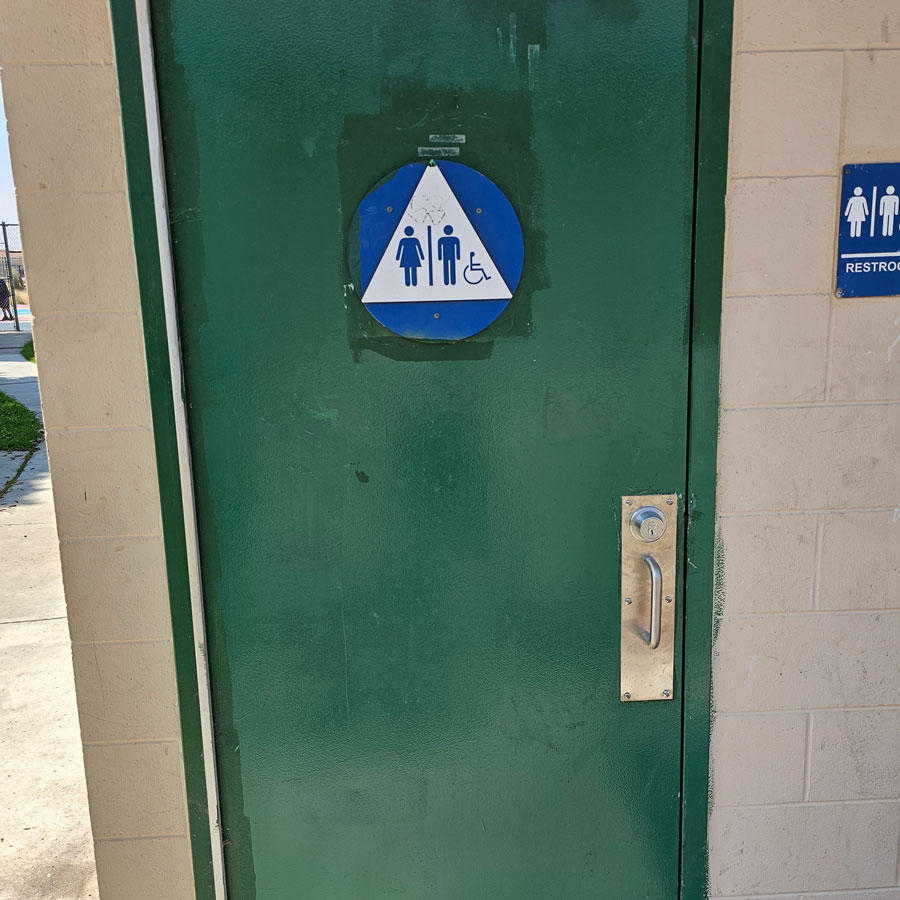

Qualitative Research - Water Sanitation and Hygiene Services Report.
My research role in the formation of the Project for Sanitation Justice's Report Recommendation on Basic Standards of Care for Californians.

Challenge
California has mandated that no human-sourced debris will be discharged into California state waterways through storm drain systems.
A research project backed by the National Oceanic and Atmospheric Administration (NOAA) was launched to assess the likelihood of
success of the California Trash Amendment Mandate established by Senate Bill 1383.
Process
Aggregate transcripts stored by previous research from the Project for Sanitation Justice
Develop new codes which identifies data within the transcripts relevant to the project
Read and listen to transcripts while coding important data points.
Outcome
19 transcripts were analyzed and coded which guided a statewide report on best practices on providing Water,
Sanitation, and Hygeive (WaSH) services to underserved Californians.
Challenge Goes Here
Forming relevant codes which meets the criteria of the project was difficult because of the complex relationship between shelterless individuals and city/state policy.
Coding excerpts required learning about the nature of human-sourced debris within complex weather and human systems.
Added Nuance
Discoveries were made regarding official city policy and its impact regarding the handling of human sourced debris from shelterless encampment clearings.
Solved Problem
Human-sourced debris seldom remain in a single spot due to the geography and the local weather systems of San Diego, compounding the problem of waterway pollution.
Impact
The study was not acted upon by the state of California.
Future steps include placing the study on the Project for Sanitation Justice website for public view.
The document will be used as a foundation for grassroot efforts to provide sanitation and dignity to everyone.
Key Takeaways
Gained a Strong Understanding of Qualitative Research
I learned how to search for impactful keywords and data points that move research forward.
Transmuting Failure Into New Opportunities.
Despite not having our recommendations adopted by the state of California we gained support that led to our expansion into Eugene, Oregon.